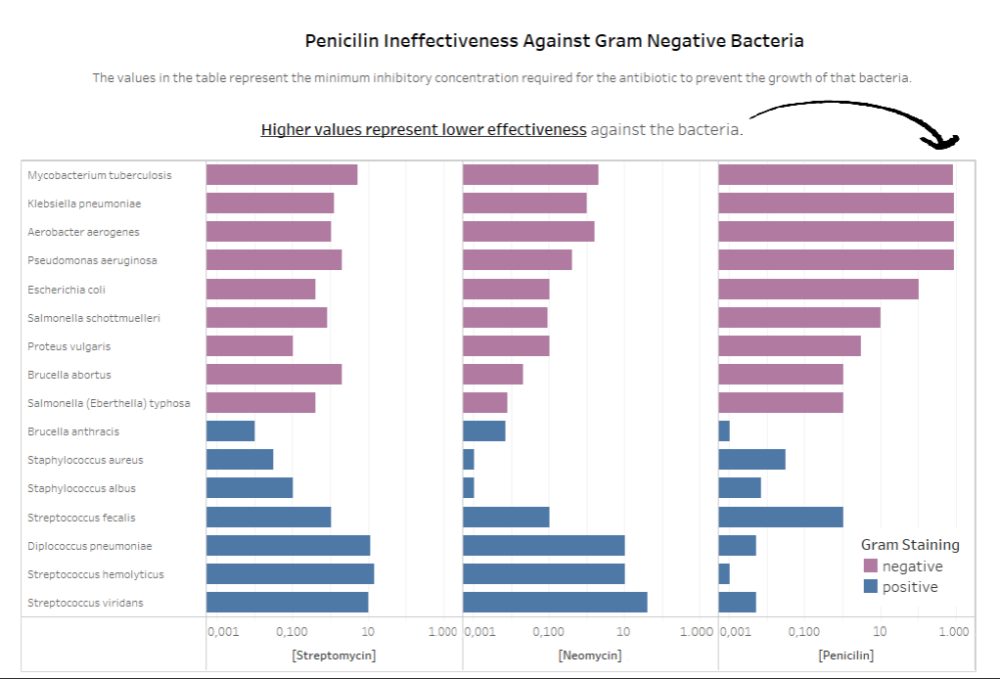
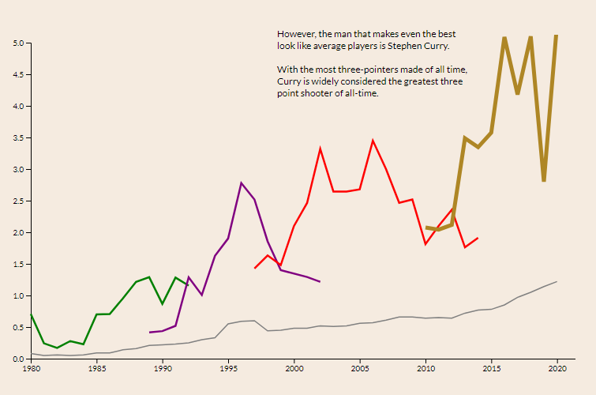

Brenno Cardoso
Senior Computer Science Undergraduate at Northwestern University
Projects
-
Penicilin Ineffectiveness Data Visualization
The goal of the visualization is to educate the audience about the ineffectiveness of Penicilin agains gram-positive bacteria. The project uses Tableau to build the visualization.
Read More -
History of Three Pointers in the NBA
The goal of the visualization is to highlight how the three pointers' importance have changed over the years and how Stephen Curry is really above average in statistics related to three pointers.
Read More
 brennocardoso2023@u.northwestern.edu
brennocardoso2023@u.northwestern.edu github.com/jammalz
github.com/jammalz
Contact